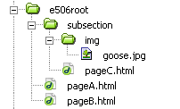

HTML
The very basics
The very basics
HTML is a markup language. In fact HTML means just that: HyperText Markup Language. A markup language has the ability to save information about information. It selects certain chunks of information - let's say a certain phrase in a written poem - and saves information about it - let's say its formatted in bold.
A HTML document thus contains two types of information: the actual content (the poem) and how to display it (for example bold). Consequently there exist two possibilities to view a HTML document: either in the browser window with the formatting information applied to the content, or in a simple text editor or a HTML authoring environment such as Dreamweaver giving access to the underlying source code as well.
Try it! Hit Ctrl+U while viewing this page in order to see its markup. As you will note there is a huge difference between the source code and the visible end result. If this looks very confusing to you, don't worry. At the end of these tutorials the whole structure will start to make sense.
A HTML document has a basic structure of TAGs which is shown below:
<html>
<head>
<title>My first webpage</title>
</head>
<body>
Hello world!
</body>
</html>
The elements of a markup language - the elements used to code this meta-information - are called TAGs. Tags are distinguished from the content to which they apply by opening "<" and closing ">" brackets. To get a glimps of the different tags that might exist in a HTML document, check this reference w3schools.
Apart from the top-level <html></html> which marks the start and end of the HTML document, each HTML file is furthermore composed of two mayor sections - <head> and <body>. The head contains general information about the document, as for example its <title> (display at the top of your browser). The body in turn contains the overall content to be displayed. For plain HTML documents, everything visible in your browser window has to be contained between the <body></body> tag. Please note, that no TAG whatsoever is allowed between the head and body section of your document!
Most but not all TAGs come in pairs. The TAGs are applied to "their" content. For example, whatever text is contained by the tag "strong" will be rendered bold:
<html>
<head>
<title>My first webpage</title>
</head>
<body>
Hello <strong>world!</strong>
</body>
</html>
However, there are also TAG's that do not have a closing pair such as the line-break <br> tag for example or the image tag to embed pictures <img>.
TAGs can be nested into each other. Most TAGs can contain other TAGs in turn. The <html> TAG contains <head> and <body> TAGs before it closes again with </html>. The <body> </body> in turn contains many other tags such as paragraphs <p> </p>.
It is essential that the nesting order is coherent. The opening and closing order has to be respected - the following code is therefore wrong:
<head>
<title>my Title
</head>
</title>
The above example is not well-formed. The title needs to be closed inside the head. When working with the source code of a HTML document, indenting the code according to the nesting order improves greatly readability. The above code now corrected:
<head>
<title>my Title</title>
</head>
The nested TAGs basically produce a document tree where the html-tag is the root or parent element which has then several "children" (head, body) which contain further "children" elements, etc.
HTML comes in different standards. Ordered from olderst to newest we have HTML4.1, xHTML, HTML5. We will concentrate on the latest release of the HTML specification, namely HTML5. Most tags remain the same between different versions of HTML. Consulting for example the HTML reference list by the W3C the new tags for HTML5 are marked.
Here is an overview of different document type declarations. Which version should I choose? It basically depends on your needs. If you expect that your clients have up-to-date browsers, use HTML5. If your content needs to render correctly on old machines and browsers, maybe you have to use an older version such as xHTML or even HTML 4.01 as well.
Each HTML file has to have at its very start a doctype declaration to indicate which version of HTML is used. With HTML5 the doctype declaration has become much simpler. Instead of
<!DOCTYPE html PUBLIC "-//W3C//DTD XHTML 1.0 Strict //EN" "http://www.w3.org/TR/xhtml1/DTD/xhtml1-strict.dtd">
which was until now the valid declaration for xHTML (strict) documents, we can simply write:
<!DOCTYPE html>And that's it.
In addition, setting the character encoding has become much simpler as well. It can now be specified as attribute of the meta tag. Instead of writing in xHTML style :
<meta http-equiv="Content-Type" content="text/html; charset=utf-8">in HTML5 we can now simply write
<meta charset="utf-8">Of course, the actual encoding of the file needs to match. See the details of the HTML meta-tag on W3, including a link to other than UTF-8 (standard choice) sets.
Whatever version you choose: validate your code and see if it is correct and complies with the specified standard. You can reference an existing page via URL or upload and test code snippets as well.
Drawing everything together up to this point, we are ready to make a very basic first web page (in HTML5):
<!DOCTYPE html>
<html>
<head>
<meta charset="utf-8">
<title>My first webpage</title>
</head>
<body>
Hello world!
</body>
</html>
Open your favorite text editor and start writing the tags/code. Save and name your file, then open it in your browser and voilà! If things turn out not as expected, watch this first video tutorial
In order to add text to your HTML document you use the <p></p> TAG. You can align your paragraphs either left (default), right, center or justified. Be sure these paragraphs are contained by the <body></body>
<html>
<head>
<title></title>
</head>
<body>
<p>Hello world!</p>
<p>Adding content is <strong>easy</strong>!</p>
<p><em>Italics text</em></p>
</body>
</html>
Paragraphs introduce a linefeed. If you want to jump to a new line without adding a linefeed you can use the "linebreak" tag: <br>
<p>Hello world <br> here starts a new line. <br > here another </p>
The <div></div> TAG can be used for grouping other elements together.
<div>
<h1>A heading</h1>
<p>some text</p>
</div>
<div>
<h1>Another heading</h1>
<p>with its text</p>
</div>The above example could be used to code a two column layout where each layer ( <div></div> ) holds several paragraphs of text. Right now, the layers are placed one below the other. However, with the adquate CSS rules, layers can be placed and stacked wherever on the page. Think about <div> in terms of Photoshop layers, a more or less (it introduces a liniefeed) neutral container element.
HTML comes with a list of predefine headings ranging from <h1></h1> (the biggest) to <h6></h6> the smallest. Each heading introduces automatically a linefeed.
<h1>Very big heading</h1>
<h2>Big heading</h2>
<h3>Not so big heading</h3>
<h4>etc..</h4>
Although font-size could be used to create headings "by hand", the hx-tags are important to structure your content hierarchically. This gives search engines and users important information how your content fit together.
HTML5 offers new, additional TAGS to structure content. See the corresponding section.
There are basically two types of lists: ordered <ol></ol> and unordered <ul></ul>. Individual entries are coded with <li></li>
Example of a ordered list:
<ol>
<li>First item</li>
<li>Second item</li>
<li>Third item</li>
</ol>
Example of a unordered list :
<ul>
<li>bullet item</li>
<li>another one</li>
<li>subsequent one </li>
</ul>
The important attributes for setting different starting numbers (<ol>) or the bullet type(s) (<ul>) is specified by Cascading Style Sheets.
The following section will demonstrate how to get connected and link to other HTML files.
A hyperlink is easy to create with the anchor tag: <a></a> In order to reference an external HTML document one specifies the address (URL) with the href attribute.
<a href="http://en.wikipedia.org">click here to visit wikipedia</a> The <a></a> will enclose the text visible to the users as link.
Specifying a specific HTML file on a remote host is done by adding the path and the name of the file:
<a href="http://www.w3schools.com/html/html_links.asp">Learn about paths</a>
Creating a link between two files of the same project is even easier since specifying the name of the file is enough. The following link points to a file name "my_second_file.html" which is located in the same folder as the current document of the link. Note how the URL does not contain any server or host address.
<a href="my_second_file.html">Visit my other page</a>
To understand the logic of assembling these addresses and paths for linking files hosted on the same domain is essential because it not only serves to reference correctly other HTML pages but also to embedd external files such as images or videos into HTML. This is explained in more detail in an upcoming section understanding paths
Anchors can be internal in the same document. It allows you to jump from the top to the bottom of the same document (or the other way round). This is called internal anchor:
<a href="#section2">Jump to section 2</a>
....
<a name="section2">Here starts section 2</a>
Internal anchors can also form part of a complete address. Users can jump to a specific section of another document located on a other server. The important symbol is the "#" sign which indicates to the browser "#here starts the internal part of the link...."
<a href="http://www.nevermind.com/bla.html#chapter4">External chapter 4</a>
This section demonstrates how to reference external media files in HTML documents. Since HTML files contain text only it does not contain other files such as images or videos for example. However, HTML allows to describe the location where additional material is located. The issue is to understand how to reference correctly those external resources.
A fundamental difference exists between absolute vs. relative paths.
Absolute path describes the location of a certain file taking into account the specific computer / domain this file is stored.It is the complete URL to a specific document. The absolute path of this document is:
(1) http://www.toytic.com/class/guide-html/index.html
Anybody on the Internet can identify and link to it by citing the above address. This path is independent from where it is located itself.
Relative paths in contrast identify a given file in relation to another file/location. Here location matters. Consider the following:
(2) e506_html_anchors01.html
With just the name of the file it is not possible to know where this file is located precisely. Its absolute path could be as in example (1) but it also could be something different such as http://www.nevermind.com/e506_html_anchors01.html
As a consequence, when thinking in relative paths, it is important to bear in mind the location of the current link. There is a basic difference between "site relative paths" vs. "document relative paths." a) Site relative paths always take into consideration the root folder of the current site. Their applicatio is a bit more specific and not recommended for a start (see details) b) Document relative paths take into account the current document.
Note: When creating a site use document relative paths. The links will always work as long as you keep the locations of files and folders consistent in relation to each other.
Below you see an example file structure captured from Dreamweaver. It does not matter if it is Dreamweaver or the Windows Explorer or Finder (on Mac). The file structure on computers are always those tree systems of folders and files.

A first folder "e506root" which contains two HTML files: pageA and pageB. Furthermore it contains a sub folder called "subSection" which in turn contains a pageC and a folder with an image. In the examples below I will show you the code for linking the various documents and files.
The code below is contained in pageA.html and will produce a hyperlink (when viewed in a browser) to jump to pageB. We stay in the same directory.
<html>
<head>
<title>pageA</title>
</head>
<body>
<a href="pageB.html"> Link to pageB </a>
</body>
</html>
In order to access pageC from within pageA we just have to further specify the path to the child folder. We enter into a child folder.
<html>
<head>
<title>pageA</title>
</head>
<body>
<a href="subsection/pageC.html"> Link to pageC </a>
</body>
</html>
Note that this code is contained in the file pageC.html In order to get back from pageC to pageA we have to access the parent folder with the following syntax ../
If you want to ascend two levels in the folder hierarchy you have to concatenate this syntax: ../../ etc.
<html>
<head>
<title>pageC</title>
</head>
<body>
<a href="../pageA.html"> Link to pageA </a>
</body>
</html>
In order to reference an image file which is contained even deeper in the file structure we just specify further the folders. Note that I don't use hyperlinks now but the <img> tag to reference an image. A browser will replace the code with the actual image file specified by the src attribute. The source attribute is also used in conjunction with other tags (for example to reference multimedia or external Style-Sheets.)
<html>
<head>
<title>pageA</title>
</head>
<body>
<img src="subSection/img/goose.jpg"/>
</body>
</html>
for creating document relative paths.
Inserting an image into a HTML document is done with the <img> tag. Its most important attribute is the source "src" which indicates where the actual image file is located. Inserting an image is altogether quite easy:
<html>
<head>
<title>adding an image</title>
</head>
<body>
<img src="goose.jpg" >
</body>
</html>
The example assumes that an image file called "goose.jpg" resides in the same directory as the HTML file itself.
In order to learn how to correctly reference images located in different folders of a site, consult the understanding paths section of this guide.
The <img> TAG has several importan attributes besides src
width / height specify the dimensions of the image. Note that you can scale the image by modifying those values. Making it larger than it actually is will result in a pixelated, low quality image; making it smaller than it actually is in wasting bandwith, since you download more pixels than you need. In general you should always specify the correct image dimensions since this speeds up display-time by the browser! Note that "width" and "height" can also be set using CSS
alt will display an alternative text meanwhile the image is downloading or when using a non-image browser. Providing an alt-attribute is required for making accessible webpages.
title is a standard attribute to display a tool tip. All in all, a the standard code for embedding an image in your webpage looks like follows:
<img src="goose.jpg" width="120" height="73" alt="my goose" title="isn't it cute?" >
Alignment of images is controlled with CSS.
To add an image to your web page is fairly easy: just use the <img > tag as described previously. Most browsers understand by default a list of different image formats which will be presented below. Deciding carefully which format to choose is a point of vital importance since each serves different purposes. Choosing a wrong format not only diminishes the quality of your image but also the file size and hence download speed.
The Graphic Interchange Format (file extension *.gif). It is limited to 8 bits which makes it very effective for images which contain less than 256 colors. If your image contains more than 256 colors it is better to use either JPEG or PNG. Typically you use GIF for simple graphics like titles/text, a logo, other graphic elements which incorporate few colors. When saving an image for the web (File > Save for the web), image editors usually indicate the number of colors at the bottom of the Color Table.
If your image contains more than 256 colors, then GIF uses "dithering" and will create intermediate colors automatically which seriously affects image quality and increases file size.
The Joint Photographic Experts Group (file extension *.jpg or *.jpeg) format is a 24 bit format and hence allows to store 16.8 Millions of colors (true color). It therefore is an excellent candidate for storing photos.
The disadvantage of JPEG is is lossy compression. If you store an image at 50% of its original quality, you cannot restore it to 100%. ImageReady/Photoshop let's you experiment with the different file size and quality settings when saving images to the web (File > Save for the web).
The Portable Network Graphics format (file extension *.png). Think of it as the evolution of GIF. It achieves smaller files for images with uniform color patches but also supports true color. Given that it is a lossless compression it can be used for saving photos. The big advantage of PNG is also its variable transparency. As one page has it: the larger the GIF the bigger the saving with PNG.
There is a fundamental difference when talking about image formats. There are Bitmap (or raster) based image formats and vector based ones. Whereas bitmaps store the color information of every pixel, a vector based format (such as Flash shockwave or the w3 standard SVG) stores the mathematical description of the shapes the image is composed of. That is, whereas raster based images store each pixel of a circle for example, a vector based format stores its geometrical formula. It is evident that this saves huge amounts of data for images made up of simple geometrical shapes filled with uniform colors. Bitmaps on the contrary work good for images with lots of shapes and contours filled with many different colors such as photos for example.
Since there are no standard, open vector image formats that would be supported by the main browsers on equal grounds, we focus in the following on the standard raster formats for the web.
The A and O of online image formats is file size. Reducing file size reduces download speed. There are two types of compressing data: lossy and lossless. JPEG for example uses a lossy file compression algorithm. Repeatedly saving an image with JPEG results in loss of image quality. GIF and PNG on the other hand work lossless. Saving in those file formats does not affect the original level of detail and hence quality of the image.
HTML5 comes with a couple of new tags that basically structure your content in a more meaningful way but do not add any content itself. The new semantic elements on the level of document structure are:
Since these elements do not affect in a visible way the display of our page, opinions might be divided when and where to best use them.
Note: semantic markup does not invalidate <div> tags for constructing your page layout! You can still use them.
The nav element indicates navigational elements on your page. Note, that not all links on a page are used for navigation and that the same page can contain several menus, i.e. nav's
A simple example would be:
<nav>
<ul>
<li><a href="about.html">About us</a></li>
<li><a href="products.html">Products</a></li>
<li><a href="contact.html">Contact</a></li>
</ul>
</nav>
The following example contains two menus, each with its own nav tag. Check the source to see the CSS for the formatting.
<nav id="horizontalMenu">
<h3>Horizontal nav bar</h3>
<ul>
<li><a href="about.html">About us</a></li>
<li><a href="products.html">Products</a></li>
<li><a href="contact.html">Contact</a></li>
</ul>
</nav>
<nav id="verticalMenu">
<h3>Vertical nav bar</h3>
<ul>
<li><a href="deer.html">John Deer</a></li>
<li><a href="fer.html">Nancy Fernandez</a></li>
<li><a href="wu.html">Lin Wu</a></li>
</ul>
</nav>An example for a collection of links that do NOT need a nav element are terms of service, copyright links usually found in at the footer of a page.
HTML5 adds two new tags to mark off header sections, <hgroup> and <header>. Together with the previous <h1>-<h6> this makes three different types of tags to indicate headers!
Thinking hierarchically, a header tag usually contains hgroup tags which in turn contain h1-h6.
See the example below for a combination of these usages:
<body>
<header>
<hgroup>
<h1>Main title: HTML5 Example</h1>
<h2>Sub-title: Usage of header, hgroup and h1-h6 tags</h2>
</hgroup>
<nav>Navigation would go here...</nav>
<p>All the above elements are contained by the header-tag.</p>
</header>
<section>Rest of the content... bla bla</section>
...
</body>In other words, the header tag is used to encapsulate all elements/tags that you consider part of the entry part of your document while the hgroup bundles two or more h1-h6 elements.
If you have to use a simple heading in the text flow, use the h1-h6 straight away, no need for header or hgroup.
<p>Here we have some sort of text</p>
<h1>Sort of title</h1>
<p>Followed by more text></p>
To understand when to use article vs. section is confusing, to say the least. The main difference is that article should be a self-contained piece of content whereas section is not. Again, since we are dealing with semantic markup, judgment of how to use these tags depends a good deal on yourself. If you think something can stand for itself and be moved between contexts (different sites for example) call it an article, otherwise set it off with section.
Illustrative would be an article about a writer for example:
<body>
<article>
<header>
<h1>Work and Life of Susan Smith</h1>
<p>The unoffical version</p>
</header>
<section>
<h3>Biography</h3>
<p>Was born... </p>
</section>
<section>
<h3>Works</h3>
<p>Her first and most famous book was published in </p>
<p>Her second bestseller followed three years afterwards</p>
</section>
<aside>
<h4>External Links></h4>
<a href="">authors site</a>
</aside>
</article>
</body>Note how the article contains several sections all dealing with different aspects of the life and work of the author in question. Finally, the aside tag points to related content of the article but which is not the primary focus (examples include glossaries, ads, etc.).
Other typical examples for article would be forum post, a magazine or newspaper article, a blog entry, a user-submitted comment, an interactive widget or gadget, or any other independent item of content.
The footer element provides additional information to its "root" or "parent" element. Thus, copyright or date-info of a page is usually contained by the footer of the body element:
<body>
<!-- other tags such as header, article, etc. here -->
<footer>
<p>copyleft © susan smith</p>
<p>sitemap</p>
<p>top</p>
</footer>
</body>
However, footers can also be attached to articles or sections of your page.
<body>
<article>
<h2>Main article</h2>
<p>Here goes the content</p>
<footer>
<p>here the footer: written by Susan Smith</p>
</footer>
</article>
</body>
The figure and figcaption elements are supposed to be used together. figure is not limited to represent image elements <img> but can be used to denote code listings for example. It is important to note that a figure could potentially be moved away from the primary content without affecting the flow of the document. figcaption represents the caption of this element. Here is a simple example:
<figure>
<img src="../img/number_one.gif" alt="the number one"><br>
<figcaption>The number one</figcaption>
</figure>
Using several images with the same figcaption is just as easy:
<figure>
<img src="../img/number_one.gif" alt="the number one">
<img src="../img/number_two.gif" alt="the number two">
<img src="../img/number_three.gif" alt="the number three"><br>
<figcaption>The numbers one to three</figcaption>
</figure>
And last but not least: using figure/figcaption in conjunction with code examples:
<figure>
<pre><code> ... </code></pre>
<figcaption>Code example 3: bla bla</figcaption>
</figure>Let's just define some basic terms often used in the context of video and audio formats online.
Often, when talking about different video formats such as AVI or MOV we are not talking about the video file itself but its wrapper format. Wrapper or container formats wrap several multimedia files + information about them into one file. For example, apart from the actual video file itself, a wrapper file usually contains subtitles or menu information (such as in DVDs). A container format thus contains several other files, starting from the video and audio file, plus some metadata about these multimedia streams. The most common container formats are:
Even if a certain media player understands the wrapper format of a specific file, it might happen that it cannot read the actual video or audio file contained. The format of the video/audio file depends on the codec used.
Check out the comparison of container formats on wikipedia.
Raw uncompressed audio or video produces very large files. Codecs (short for coder/decoder) are essentially algorithms to compress/uncompress data. Different types of video/audio materials need different compression techniques.
Amongst the most well known video codecs are:
And some examples of audio codecs:
The Flash Video Format, for example, supports H.264 video codec and MP3 audio codec (amongst others).
See comparison of video codecs and comparison of audio codecs at wikipedia.
Not all browsers support all codecs. Thankfully HTML5 <video> tag allows to specify various video sources (see example below). The "who-supports-what" of HTML5 video is continuously shifting given the huge variety of operating sytems, browsers, mobile devices, etc. Your best best bet is to deploy your videos in both webM and mp4 containers which cover most cases (see the browser support comparison here). Thus, create two files, one encoded with VP8 (video) and Vorbis (audio) for webm, and H.264 (video) / ACC (audio) for mp4.
HTML5 introduces the <video> TAG. This eliminates the need for third party plugins like Flash or Quicktime as long as the browser supports HTML5 and the deployed container/codec format. Here is the most basic setup specifying two video formats:
<video controls>
<source src="myVideo.mp4" type="video/mp4">
<source src="myVideo.webm" type="video/webm">
</video>
The browser automatically chooses the video format that it supports. The type attribute of the source-tag delivers this information upfront. controls displays play/pause button, the timeline and volumne control. In addition <video> supports the following attributes: autoplay, preload, poster, height, width, loop, muted. The poster attributes allows you to specify a still-image meanwhile the video is loading. Try out these controls interactively here.
Video in HTML5 is much more powerful than this simple example suggests. Playback of specific fragments is possible by specifing the time range you are interested in; subtitles and captions can be included with the <track> TAG. CSS is used for skinning. Videos are also completely controllable through JavaScript, giving rise to different HTML5 video player libraries (see below). These basics are covered in some more detail in this html5rocks tutorial.
There is a whole range of different HTML5 video players available. Check out this very good player comparison here VideoSWS.
Videojs is an open source library. It is quite easy to setup and if you run into trouble, its big community has solved most problems already for you.
Another promient player is flowplayer. It's feature rich, integrates well with JQuery and has great playlist capabilities.